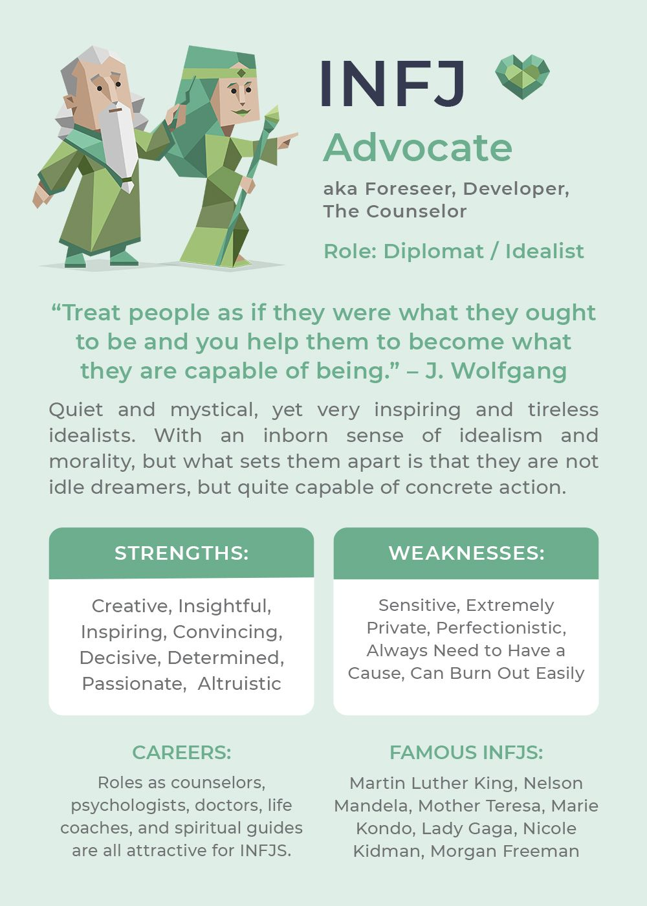
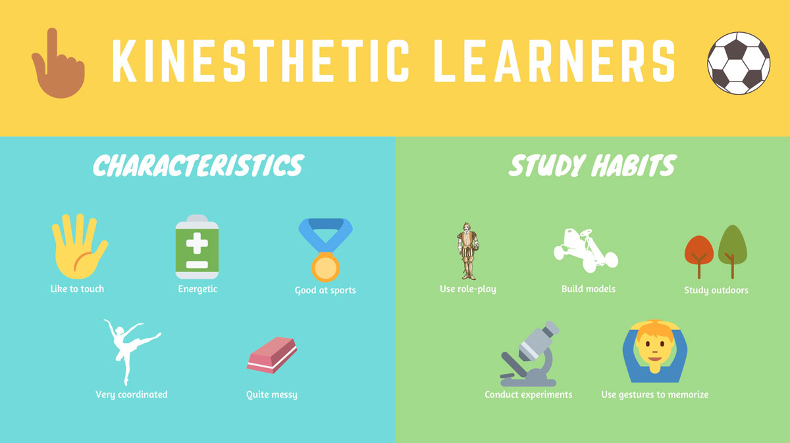

- Name:Mitch Andrews
- Student Email: s3965228@student.rmit.edu.au
- Background Information:Was born and raised in Australia and have two loving parents who both have English backgrounds. The only language I speak fluently is English, however, I did take some classes in Italian back in high school. Before commencing at RMIT I completed both my certificates III and IV in information systems and media, both these certificates were completed through Chisolm Institute. Something outside the realm of IT that I’m interested in is music, passionately playing the Alto saxophone all through high school sparked my interest in the technical aspects of creating music.
Personal Informtaion
Interest In IT
What is your interest in IT? Where did your interest in IT start?
During high school, I took an IT class because I knew that I had a passion for gaming and was always interested in keeping up to date with new technology that was coming out. During this class, I found a real passion for the software programming side of the course, we didn’t do anything majorly technical, but we used Visual Basic to create different environments and objects that interacted with each other. This kick-started my interest in the software programming side of things, and since completing high school I have worked through some of the free coding websites that exist (Odin project and free code camp). Progressing forward, I then started completing my certificates at Chisolm Institute, and whilst studying there, I was offered a job as a help desk technician for a local high school. This help desk job made me realize that I’m not only interested in the software development side of IT, but also the technical hardware side of things as well, as I’ve since helped install servers and different components of computers at the school.
Why did you choose to come to RMIT?
The two major reasons why I chose RMIT as my place of study, are because I know that RMIT is known as the institute for technology, and has some of the best courses and education in all of Australia for learning IT. The other reason is that one of my closest friends finished studying at RMIT, and strongly recommended the institute as a place to study. RMIT is also known to show great support for their online students, and since I’m studying online, this made the university much more appealing.
What do you expect to learn during your study?
I’m hoping to further increase my skills in web development (learning more about HTML and CSS), as well as further my interest in software development (learning more about different coding languages and how they interact with each other). Increasing my ability to work in a team environment is also something that I’m hoping to learn more about, as I know that most careers in IT require great communication skills between team members, and learning how to interact with your department can be crucial.
Ideal Job
My ideal job
Working in the gaming industry would be my dream career, I’ve grown up playing video games, and being a senior game developer would give me the creative aspect of work that I crave, as well as the rewarding challenge of managing lots of smaller developers. The job would require coding experience, as I would be helping code different areas of the trading card game itself with experience in the coding language of C# being of major importance. Five years of work experience in the gaming field is also required, with a high emphasis on having experience working in a strong team environment. Any degree in the Information Technology field would be a beneficial component, especially if the degree centres around programming. Currently, I have experience in the Information Technology field, as I have worked as a help desk technician for the last four years. Besides my work experience, I am currently studying to achieve my degree in Information Technology, which I am hoping will give me some leverage to apply for some careers in the gaming industry. Once I have achieved a junior-level job in the field of gaming, I would then like to work on getting some online certificates in coding (specifically C#). After working myself up in positions in my career and having achieved the required five years of experience, I would meet the requirements for this job application.
Personal Profile
Myers Briggs:INFJ-T
Online Learning Styles:Kinesthetic Preference
Big Five:

What these results mean for me
The results of these tests show how I as an individual like to learn, and how I may be best suited to learn when working in a group environment. Being an INF-J and having a kinesthetic learning preference, means that I like to learn physically. Physically could be anything from tapping my feet whilst studying for an exam, to physically demonstrating something to an audience. Because of my scores in the ‘Big Five Factors’ test, you can see that I have a high stat in ‘Intellect/imagination’, meaning that I like to hypothesise and imagine different scenarios when learning something new. With these results, I think I would work best in a group environment when being able to physically touch data as a way of teaching or communicating with my teammates. When forming a team, I will actively look for people who have a learning preference which is catered towards kinesthetic, as this will be a way of enhancing our like-minded way of learning, and could mean that we will actively learn better from each other.
Project Idea
Overview:FrameLife
FrameLife is an application for ios and android devices that will find a frame of a film similar to the real-life photo that you input into the app. FrameLifes’ extensive database of films, mixed with its intelligent AI processing software, means that you can find a film from any mundane photo that you take from around the house/the world around you. The app is free and allows users to input as many photos as they wish into the app without any extra cost. There is also a parental lock setting within the app, meaning that no film with a rating of M and upwards will be generated if the user wishes.
Motivation
This project will be interesting and useful for many film enthusiasts and cinematographers, as it can be used as a source of inspiration and a way of validating if your frame is unique and individual. Cinematographers can take a photo of the current scene/frame that they’re filming, and using the FrameLife app, determine whether a similar frame has been used before in another film. An increasing problem in today’s day and age of cinema is truly creating art that is unique and individual, my hope with the FrameLife app is that it will help film developers be more creative, and overall increase the quality of films that are being produced.
Description:
Once FrameLife has been installed on the users’ device of choice (ios or android), FrameLife will need to access the device’s camera with the permission of the user. You will then be asked to create a FrameLife account, in which you will need a valid email address and a secure password. Through FrameLifes intuitive UI, there will be three buttons at the bottom of the app. The first button will be a camera icon, which will open the camera on the device, and will allow the user to take a photo in real time. There will also be a button on the bottom left-hand side of this camera section, that will allow the user to upload a photo from their camera roll. Once a photo has been taken, or uploaded from the camera roll, FrameLifes AI will start analysing the photo. The AI scans the photo and comes up with a colour percentage of how many certain colours are within the frame that has been taken, it then looks for certain objects or faces within the frame and can analyse this and find a specific film frame in its cloud database that has a similar object and colour percentage to the frame that was uploaded. Once FrameLife’s AI has identified the most similar film frame to the picture uploaded, it will then display the film frame side by side with the picture that was taken. You can also see exact percentages of how similar the frame uploaded is to the movie frame that was chosen. The second button at the bottom of FrameLifes UI will be the history button. When pressing this button, it will take you to a historical record of all the photos that you’ve uploaded to FrameLife. All these photos are backed up through cloud storage, which will mean that all photo’s that you upload can be accessed at any time if you have an internet connection and are signed into your FrameLife account. Through this history section, you can choose to locally download any of the historical photos, as well as delete any frames from your FrameLife account. The third button is the ‘social’ button, this will take you to the social media section of FrameLife. Through this section, you can search for other users and view any FrameLife photos that they’ve taken, as well as like and comment on any of their ‘frames’. You can also choose to follow any user, which will mean that you get notified when that user uploads a frame to FrameLife. Another part of the social aspect of the app is that you can view other users who have also gotten the same movie frame as you, seeing the exact photo they’ve uploaded to get that frame. The last feature of the FrameLife app is the settings section. Settings will be accessible regardless of whether you’re in the camera, history, or social screen on the app, as it will always be located as a button on the top left-hand side. Through FrameLife’s settings, the user can turn off the social aspect of FrameLife, which will essentially cause your FrameLife account to become private, meaning that your account cannot be searched for by other users. You can also change features such as the language, family mode, camera accessibility and visual display settings such as a dark mode.
Tools and Technologies:
FrameLife will use Google Cloud’s Vision API as its Artificial Intelligence software for scanning frames that are uploaded, vision allows for real-time object detection, facial recognition as well as character recognition. Hardware-wise, FrameLife as well as FrameLife’s extensive database of films will need to be hosted on a server, which can be accessed at any time. Because data of users on FrameLife will also need to be stored somewhere, a form of file hosting service and cloud storage solution will be required so that users do not lose any of their frames that are uploaded.
Skills Required:
Software development skills will be required, particularly skills in app creation, this will mean that java skills will be of high need and importance. We will also require good programming skills for implementing the AI software that we’re going to use, as well as skills in implementing cloud storage solutions and server management. Luckily most of these skills are relatively easy to find in today’s day and age of job searching, as there are many Information Technology specialists looking for careers in software development and management of hardware components. We may also need someone with expertise in marketing the app, as the application is wanting to have the furthest user reach possible.
Outcome:
The best possible outcome for the software would be that the app becomes used in most modern film sets and becomes a staple for film developers. Cinematographers use the app as a way of testing shots that they are filming, seeing how similar they are to other films that are in the FrameLife database. The app could possibly have a wide commercial use as well, with many people using the app for entertainment purposes, and sharing the frames their photos generate through the social aspect of the app.